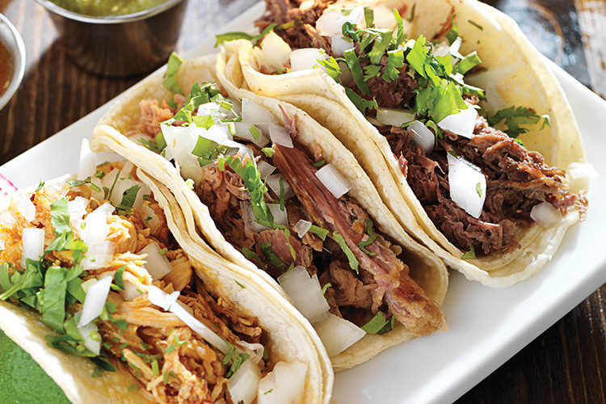
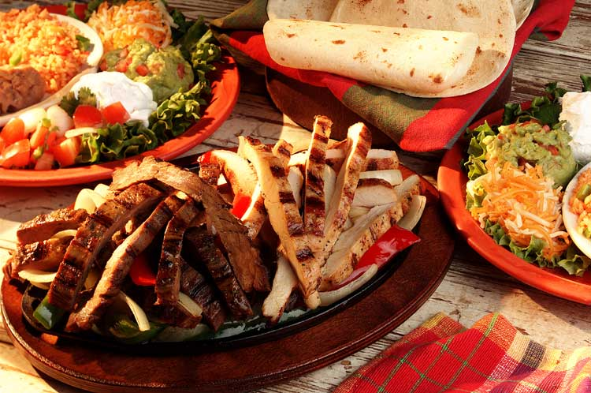
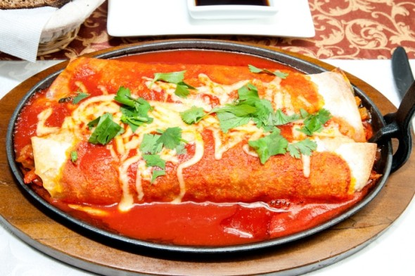
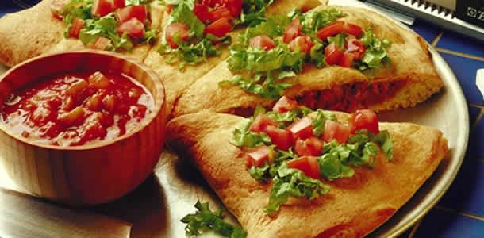
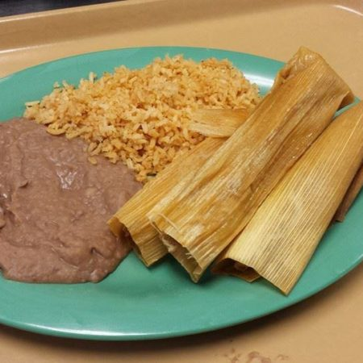
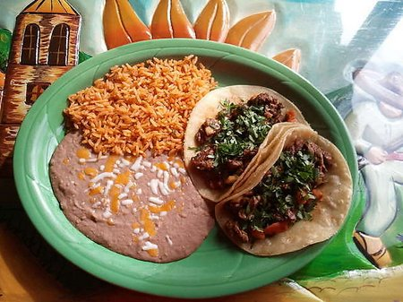
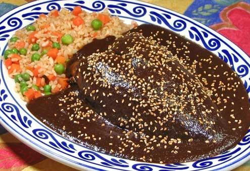

|  |
 |
 |
 |
| $5.25 |
$10.50 |
$6.00 |
$5.75 |
| English: These are my pulled pork or pulled beef tacos. This includes onion and cilantro on it. Everything is put together with my homemade white corn tortillas. |
English: These are my grilled steak fajitas that come with grilled onions and peppers. It also comes with a side of beans and all of the toppings. You get to pick flour or corn tortillas. |
English: These are my red sauce enchiladas. My grandmother's recipe, my favorite childhood dish. Classic and delicious every bite. |
English: These are my fluffy shell empanada quesadillas. A new take on a classic quesadilla. Popular dish and comes with your choice of sides. |
| Espanol: Estos son mis tacos de puerco desmenuzado o de carne de res tirada. Esto incluye cebolla y cilantro. Todo se combina con mis tortillas caseras de maíz blanco.
|
Espanol: Estas son mis fajitas de carne a la parrilla que vienen con cebollas y pimientos a la parrilla. También viene con un lado de frijoles y todos los ingredientes. Puedes recoger tortillas de harina o maíz.
|
Espanol: Estas son mis enchiladas de salsa roja. La receta de mi abuela, mi plato favorito de la infancia. Clásico y delicioso en cada bocado.
|
Espanol: Estas son mis esponjosas quesadillas de empanadas de concha. Una nueva versión de una quesadilla clásica. Plato popular y viene con su elección de los lados.
|
|  |
 |
 |
 |
| $4.50 |
$7.50 |
$5.00 |
$6.25 |
| English: These are just my families classic tamales that everyone loves. Made fresh daily and are worth every penny. My kids favorite meal as well. |
English: These are my spicy red bean burritos. Made with jalepenos and a bunch of different spices. Will you take the heat? Very delicious if you love a little kick. |
English:My lunch steak tacos. Fresh grilled steak seared to perfection. Simple yet delicious. It is made with Grade A steak and topped with garnishings of your choice. |
English: This is the very savory yet sweet, mole chicken. Chicken cooked with love, covered in my Aunt's secret mole recipe. This is her favorite dish, and there's no questions why. |
| Espanol: Estos son solo los tamales de mis familias clásicas que todos aman. Hecho fresco todos los días y valen cada centavo. La comida favorita de mis hijos también.
|
Espanol: Estos son mis burritos de frijol rojo picante. Hecho con jalepenos y un montón de especias diferentes. ¿Tomarás el calor? Muy delicioso si adoras una pequeña patada.
|
Espanol: Mi almuerzo tacos de carne. Filete fresco a la parrilla a la perfección. Simple pero delicioso Está hecho con filete de Grado A y cubierto con guarniciones de su elección.
|
Espanol: Este es el pollo mole muy sabroso pero dulce. Pollo cocinado con amor, cubierto en la receta secreta de mole de mi tía. Este es su plato favorito, y no hay dudas de por qué.
|
Can't wait to see you here! Fridays are $1.00 Off Margaritas!